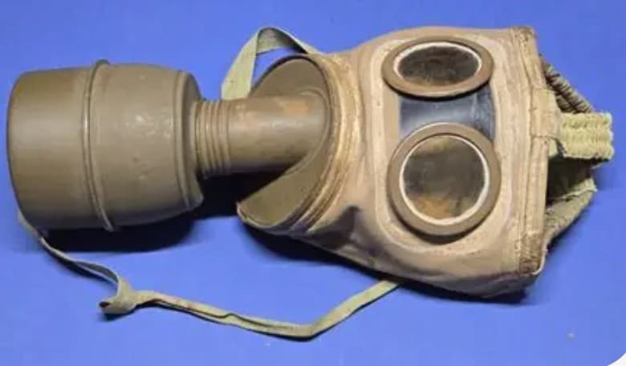
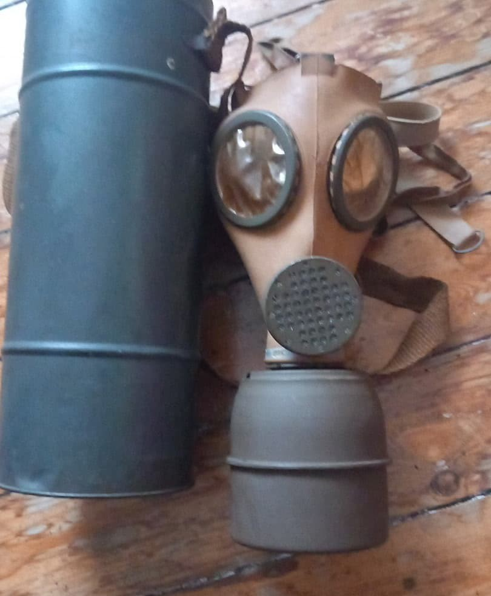

Introduction
Durant la Seconde Guerre mondiale, la France utilise plusieurs modèles de masques à gaz, répartis en deux catégories : militaires et civils. Les masques militaires sont les ANP 31 (à tuyau), ARS 1931 et ARS 1939 (compacts). Les civils reçoivent les modèles C38, C39 et C40.
ANP 31 – Masque à tuyau
L’ANP 31 est un appareil à tuyau utilisé durant la mobilisation de 1939–1940. Il se distingue par sa cartouche déportée reliée par un tuyau annelé. C’est le masque militaire le plus ancien encore en service en 1940.

Sac de transport ANP 31
Le masque ANP 31 est transporté dans un sac en toile kaki, conçu pour accueillir le masque, le tuyau et la cartouche déportée. Ce sac est typique de la mobilisation de 1939.

ARS 1931 – Masque compact militaire
L’ARS 1931 est le premier masque compact militaire français. Il possède un filtre vissé, un caoutchouc épais et des œilletons métalliques robustes. Très répandu dans les unités en 1939–1940.

ARS 1939 – Modèle simplifié
L’ARS 1939 est une version simplifiée du modèle 1931, produite en grande quantité pour la mobilisation. Il est plus léger, plus rapide à fabriquer, mais reste un masque militaire à part entière.

Boîte métallique WW2
Les masques ARS sont transportés dans une boîte métallique cylindrique, typique de l’armée française durant la Seconde Guerre mondiale. Elle protège le masque et son filtre contre les chocs et l’humidité.

Masques Civils : C38 – C39 – C40
Les civils français reçoivent des masques spécifiques : les modèles C38, C39 et C40. Contrairement aux masques militaires, ils sont plus simples, plus légers et conçus pour une production de masse.
- C38 : premier modèle civil, très répandu.
- C39 : version améliorée du C38.
- C40 : modèle simplifié produit en 1940.

Différences entre masques militaires et civils
Les masques militaires (ANP 31, ARS 1931, ARS 1939) sont conçus pour le combat : caoutchouc épais, filtres robustes, sacs réglementaires, œilletons métalliques solides.
Les masques civils (C38, C39, C40) sont plus simples : caoutchouc fin, filtres légers, sacs en toile ou carton, production rapide pour équiper la population.
En résumé : les militaires sont robustes et conçus pour le front, les civils sont légers et destinés à la protection de base.